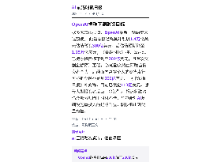
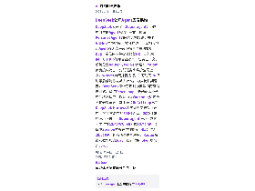
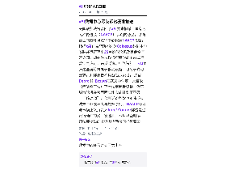
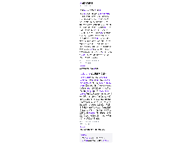
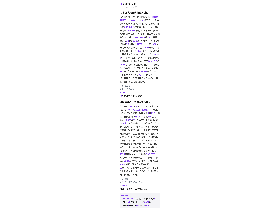
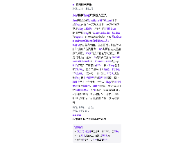
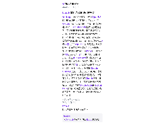

每天高频班次的 AI 领域要闻速览：发生了什么，为什么重要。

缩略图加载失败，点此查看海报
缩略图加载失败，点此查看海报
缩略图加载失败，点此查看海报
缩略图加载失败，点此查看海报
缩略图加载失败，点此查看海报
缩略图加载失败，点此查看海报
缩略图加载失败，点此查看海报Anthropic技术人员确认，已在Opus 5.5模型的系统提示词中加入两句话，引导Claude不要“重新创建一个属于别人的特定游戏”；Claude Code随后出现明确规则：可以创建原创游戏、特定类型游戏以及使用用户自有设计和素材制作的游戏，但不得复刻已存在的特定游戏，即使改名或称其为原创也不行。 这一限制的背景是9月22日发布的Opus 5.5在代码能力上大幅提升：逆向工程与反编译门槛明显降低，出现了在浏览器中运行《GTA 5》，以及越狱PS5运行《光环2》《塞尔达》等案例。 独立工作室Alliance Arts因此取消了新游戏《醉酒女神反流》的公开试玩，担心试玩内容被喂给AI后，克隆版本抢在正式版前上线。 有用户称，用免费的Claude Opus 4.6仅凭一句提示词，不到两小时就做出了功能完整的宝可梦克隆游戏。 批评者认为，该禁令只能约束Claude自身，把任务拆解成看不出上下文的具体技术需求后仍可绕过；同时Claude Code的GitHub issue页面出现大量原创开发者的投诉，称项目写到一半被判定为“疑似复刻现有游戏”而中止。
依据：可提取原文正文 · 可提取正文；不含交互图表、图片或付费隐藏内容
量子位21:09原文链接 ↗
清华大学姚期智、袁洋团队提出「代数世界模型」（AWM），让AI从观察与实验中提炼可证明的规律，而非只记录现象。 测试在ARC-AGI-3游戏集上展开：顶级模型虽能拿到99.9%得分，但生成的规则只是符号化现象记录——把某关步数设为无法通关的18步后，GPT-6 Astra试了8轮便断言至少要22步；12次类似测试中，两款顶级模型仅5次判断出「不可能」，其中4次给出的最低步数仍是错的。 AWM分三步：把观察写成可执行Python假设，用新观察验证并凝炼为通用规则，最后形式化为Lean 4可机器检查的数学断言，灵感来自范畴论的投射极限与归纳极限。 基于Opus 5.5的AWM两次尝试即证明该关无解，并指出再多一步就能获胜；在整个测试集上，它以183关全部通关、得分99.9%完成，平均动作数仅为人类基准的43%。 团队同时指出，证明只在已观测到的世界内成立，探索不全则模型只是局部真理。
依据：可提取原文正文 · 可提取正文；不含交互图表、图片或付费隐藏内容
量子位16:02原文链接 ↗
红旗连锁2025年3月公告与机器人公司立项研发「机器人无人售货系统」，消息公布后股价次日涨停，截至当年4月23日收盘较公告前上涨约35.0%；研发16个月后，公司于2026年7月初宣布终止该项目，转为24小时云值守业务的规模化运营。 红旗此前在风险公告中列出三处短板：面对密集货架与玻璃瓶、纸巾、金属罐头等不同材质商品时，机械臂抓取失误率较高；不同光照下视觉识别容易偏差；避障与数据传输稳定难以兼顾。 接近公司的人士称，夏季玻璃瓶冷饮结水珠，机器人拿不稳常摔碎，也无法稳定拿取复杂包装商品，货架过道窄、周围有顾客时更吃力。 红旗2025年年报显示研发费用约286.68万元，此前未公示过研发费用，由此推断项目投入在280万元量级。 行业侧，全国已有超100个机器人零售仓或零售布局，分布于30余座城市，但受访从业者认为多数项目仍处概念验证阶段，单台机器人加零售仓成本预估近百万元。
依据：原文选段（可能不完整） · 原文较长，使用有界正文选段，可能遗漏未选段信息
量子位15:50原文链接 ↗
Jev的母公司TypeSafe AI与Agent工具平台Treg开源了一款找人工具，官方称其成本比Clay低85%，已获得约6400 Star。 使用时把Treg接入Claude Code、Codex等Agent，只需描述要找的人（如「旧金山B轮后AI初创公司的营销负责人」），Agent负责拆解地区、融资阶段、职位等条件并调用人员数据库，Jev判断候选人是否真的匹配，Treg再接邮箱查询与验证工具完成补齐。 在含119项真实任务的People Search Bench上，Claude Code单独做B2B拓客的正确率为43%，接入Treg后升至78.2%，其余三类分别为80%、76.3%和62.9%。 官方对比测试中，292人名单里Treg花1.49美元找到289个邮箱、其中264个与企业公开地址一致，Clay花10.34美元找到280个、262个一致。 需注意每条约0.0089美元（约6分钱）只覆盖找邮箱，验证邮箱真伪、补齐履历另行计费，也有用户反馈搜索自己和同事时找不到有效信息。
依据：可提取原文正文 · 可提取正文；不含交互图表、图片或付费隐藏内容
量子位12:18原文链接 ↗
苹果CEO约翰·特努斯（John Ternus）在接受《连线》记者史蒂文·莱维采访时，回应了外界对苹果在AI上落后的评价。 他承认“每个人都有看法”，但表示“我很满意我们现在的状态”。 特努斯称苹果会在新产品中“充分利用AI”，但强调“我们不想为了AI而AI”：做得对时，用户不必分辨一件事是AI还是传统软件完成的，关键是产品是否被真正喜爱。 被问到智能体可能让App变得不必要时，他回答说那或许会让生活更轻松，但产品创造是非常人性化、个人化的事，也是苹果热爱做的事。 报道提到，苹果此前因推迟更强版本的Siri而被认为落后，该版本于今年夏天发布；特努斯于今年9月初正式出任CEO。 以上均来自该报道转述的采访内容，并非苹果官方发布。
依据：可提取原文正文 · 可提取正文；不含交互图表、图片或付费隐藏内容
TechCrunch AI05:41原文链接 ↗
TechCrunch创始人峰会（Founder Summit）将于11月4日在波士顿SoWa Power Station举办，由Fidelity Private Shares赞助，这篇推广文章的发布时间距开幕还有4天。 活动主打更有针对性的社交：由Braindate支持的Networking Lounge允许参会者围绕具体话题预约一对一或小组对话；此外还有圆桌讨论、分论坛问答、展区和闭幕酒会，波士顿全周亦有官方周边活动。 文章举例说，现场可就融资策略、招聘难题、企业销售、波士顿本地创业等话题撮合参会者，并把台上分享延续为私下交流。 票务方面，开幕前购票最高可省100美元，并可获赠第二张门票。 需注意，这是活动推广内容，未涉及具体的AI产品或技术进展。
依据：可提取原文正文 · 可提取正文；不含交互图表、图片或付费隐藏内容
TechCrunch AI05:36原文链接 ↗
美国联邦法官驳回了xAI要求撤销全国有色人种协进会（NAACP）诉讼的动议。 该诉讼由南方环境法律中心代表NAACP提起，指控xAI在孟菲斯郊外的Colossus数据中心安装并运行至少35台燃气轮机及其他空气污染源，却始终未取得所需的施工前或运营空气许可，违反《清洁空气法》。 xAI主张这些涡轮机属于移动设备、可免于许可要求，并称原告不具备起诉资格。 法官Debra M. Brown在裁决中认定，原告依《清洁空气法》享有法定起诉资格，涉案燃气轮机在密西西比州实施计划下不属于“移动源”，公民诉讼条款也不违反宪法第二条或私人再授权原则。 NAACP环境与气候正义负责人Abre' Connor称这是追责行动中的又一次胜利；本月早些时候，司法部提出的类似撤诉动议同样被驳回。
依据：可提取原文正文 · 可提取正文；不含交互图表、图片或付费隐藏内容
TechCrunch AI05:17原文链接 ↗
据多家媒体报道，OpenAI最新一轮融资未达预期。 此前有报道称其计划以1.4万亿美元估值融资300亿美元，后估值预期降至1.25万亿美元；《金融时报》称，公司现已把融资目标下调至200亿美元，且首次交割金额预计更低。 该轮融资将由阿联酋投资者牵头，后续面向富裕个人的零售发行可能把总额补足到200亿美元。 《华尔街日报》补充称，目前已锁定110亿美元，部分大型投资者反应“冷淡”。 报道将融资遇冷部分归因于时机不佳：华尔街对AI基础设施重投入的疑虑升温，科技股出现明显抛售。
依据：可提取原文正文 · 可提取正文；不含交互图表、图片或付费隐藏内容
TechCrunch AI00:12原文链接 ↗
DeepSeek公开了《Super-agent：迈向更自主的Agent系统》一文，披露Personal Agent的底层架构思路，并附上GitHub原型链接。 按其描述，该架构设想让Agent在无人@或下指令时主动发现Bug、定位问题并提交修复PR，还能跨IM、GitHub等平台延续同一任务上下文。 系统分为Router与Worker两层：Router负责接收消息、分配任务和维护全局上下文，Worker负责并行执行，并可订阅PR评论等后续消息以减少转发。 为支持长期运行，DeepSeek设计了规则加模型的两级消息过滤、异步ReAct Loop、云端与本地分离的状态保存，以及独立Watchdog监控故障和无效循环；其中异步ReAct Loop已在DeepSeek Harness中实现但尚未默认开启。 初步实验在约300条消息、20项请求的环境下进行，Super-agent任务完成时间中位数12.4分钟、95分位15.7分钟，传统单Session方案在中性提示下95分位为29.5分钟；但取消事件直通后，Router决策次数增加约30%、缓存读取Token增加约37%。
依据：可提取原文正文 · 可提取正文；不含交互图表、图片或付费隐藏内容
量子位21:49原文链接 ↗